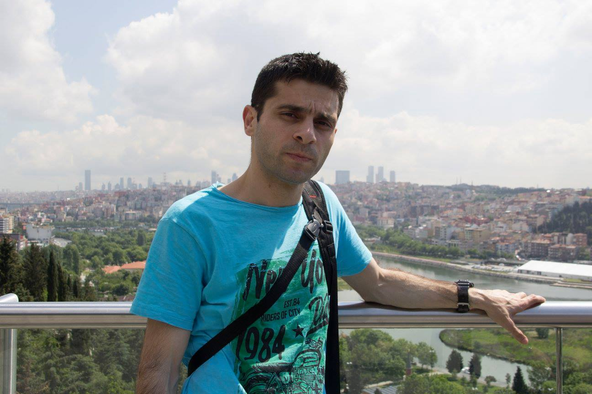

Hello! I'm fatih yavaşoğlu, a passionate stock photographer who loves capturing moments and sharing them with the world. All of my photos are available for free, both for personal and commercial use. My goal is to enhance your projects with high-quality images and inspire creativity.
My love for photography started in 2006 and over time, especially in 2015, it turned into a professional endeavor. I have been to many different places in Istanbul and out of the city and I enjoy exploring and each of my photos tells the stories of my adventures. The photos capture a moment that I am excited to share with you.
Thank you for your interest, and I hope my photos inspire your projects!